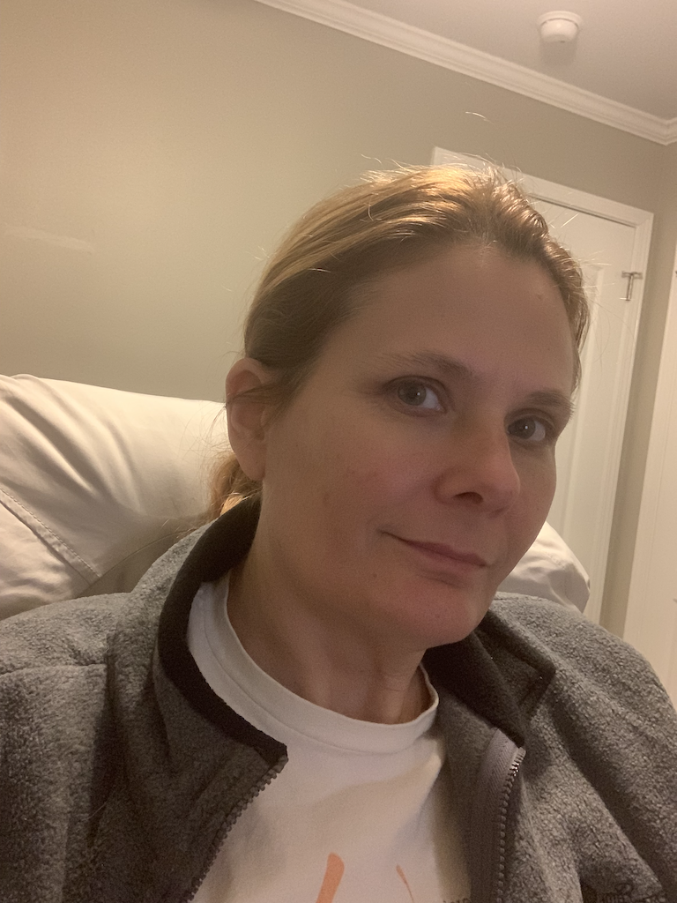

My Resume

Work Experience
For five years I worked at Auto Zone. I went from part-time driver to Assistant store manager. If you would like to know more about this job feel free to ask. For now let us focus on Web and App Development which is what I have been training for, and where my professional career is targeted.
Education
Self taught primarly Udemy courses including:
- 100 Days of Code: The Complete Python Pro Bootcamp
- The Complete 2024 Web Development Bootcamp
- The Complete Flutter development Bootcamp
- Kotlin for Android: Beginner to Advanced
- Computer Network: Internet Protocol, IPv4 and Subnetting
- Master Apache Spark using Spark SQL and PySpark 3
- The Complete Project Management Fundamentals
- Python for Data Science and Machine Learning Bootcamp
- Kotlin Android Development Masterclass
- TensorFlow Developer Certificate Bootcamp
Achievements
- Developed 'QC Checklist' a Flutter/Dart based checklist app
QC Checklist App
- Developed 'Cosmic Crunch' a Flutter/Dart based fortune cookie app
Cosmic Crunch App
- Developed 'Roll Forge' the best random number generating app, built with Flutter
Roll Forge App
- Earned Construction Quality Control Certification from the Army Corps of Engineers
- Earned OSHA Safety Certification 1910 and 1926